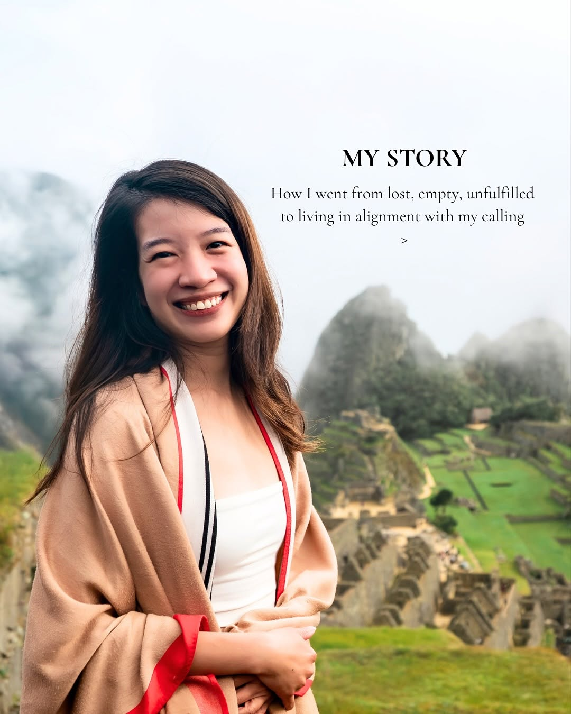

A proposal prepared for
A proposal for someone who has already lived several lives - and is finally building the one that is actually hers.
01 / 07 - The I-See-You Section
You are not a manifestation coach. You have been careful to say this - carefully distancing yourself from the vision boards, the 333 affirmation methods, the girlies manifesting their way through life without ever asking what is actually blocking them. Your entire account is a quiet, persistent argument against that culture.
"I was just running away from facing my fears and hoping that someone will come and magically save me." -- @bibiana.lim, April 2026
That line is the spine of everything you teach. It is rawer than most coaches will ever allow themselves to be in public. And it is exactly why people stay.
You started with a science background. You went on sabbatical. You lost 90% of your friends - not because of anything dramatic, but because they knew a version of you that no longer existed and could not follow you into the new one. You slept in a tent in the Peruvian jungle and came home with a sentence that became the foundation of a whole body of work: "What you don't end, you bring with you." You visited Uluru with humility, not content hunger. You reconnected with bazi and qigong and found that your ancestry had already mapped the terrain.
You have lived several lives inside one body. And now, in 2026 - a double fire year, bing wu, the kind of intensity that only arrives once every 60 years - you are in a pivot. The Closing Chapters era is softening into Align and Manifest. Bio updated. Offer launched. But the narrative thread between the two is not fully visible yet to someone who found you last week.
"Alignment is no longer a 'nice to have' in 2026. It. Is. The. Only. Path. Out." -- @bibiana.lim, March 2026
That is what I am here for. Not to put words in your mouth. But to help the right person find their way to you - and understand, quickly, why you are different from every other energy coach on their explore page.

02 / 07 - What I Observed
Evidence: DVYouUYEQvQ - 545 likes, 5,998 views (22% of your total followers on a single post)
The patriarchy + intuition Reel is not just your highest-performing post. It is proof of concept for an entire series that does not exist yet. You wrote one piece on how women were trained to call their intuition "overthinking" - and it nearly went viral. But there is no follow-up. No slide two. The audience that found you from that post has nowhere to go deeper.
The opportunity: a 6-part series - one angle per post - each exploring a different arena where patriarchy stole your read on a situation (the workplace, relationships, your own body, food, clothing, spirituality). Each piece standing alone, all of them pointing toward the same core: your intuition was never wrong. It was just inconvenient for the system.
Evidence: Bio now reads "JOIN ALIGN and MANIFEST" but 40%+ of your archive is Closing Chapters content. Gap: Apr-Aug 2025, almost no posts.
Someone who discovers you today sees "align and manifest" in the bio, then scrolls into months of "closing chapters." Without a transition post, they cannot tell if you changed directions, if the two things are related, or if you are still selling the same thing. That confusion costs you followers on the edge.
The opportunity: one Reel, 60-90 seconds, honest and personal. The story of how closing chapters was not the end of something - it was the prerequisite for alignment. Connect the two eras. Let your existing followers understand the pivot. Let new followers see the full arc of your thinking, not just a snapshot.
Evidence: DV6EEVzkWO3 - 115 likes, 2,456 views. Your bazi + fire year post significantly outperformed your Reel average of 750 views.
There are hundreds of alignment coaches and manifestation guides on Instagram. Almost none of them are explaining Chinese philosophy, bazi, and ancient energetic frameworks to an English-speaking audience in a way that is both grounded in tradition and actually accessible. That is a blue ocean. And right now, you are barely standing at the edge of it.
The opportunity: a monthly or bi-monthly bazi series - one post per month translating what the current energy means for the women in your audience. Something they cannot get anywhere else. Something that turns casual followers into people who genuinely need your specific lens.
03 / 07 - What I Can Do
Card 01 - Priority
[Invest: contact]
Card 02
[Invest: contact]
Card 03
[Invest: contact]
Card 04
[Invest: contact]
04 / 07 - Voice Proof
I read through your captions before writing a single word of this. Not just the top posts - all of them. I was looking for your fingerprints: how you open, where you break lines, which words you reach for when you are trying to say something true. The sample below is a new piece - an angle you have not covered directly yet, built from the beliefs you have already shown me you hold.
Carousel script - 6 slides
Suggested caption (goes with the carousel)
You're not attracting the wrong people. You're attracting the unfinished ones. For years, I kept ending up in the same dynamic. Different face, different name, same feeling. Turns out, it wasn't about them. It was about the chapters I hadn't closed yet. What you don't end, you bring with you. ***** If this landed, my Align and Manifest challenge goes deep into exactly this. DM me "alignment" - I respond personally, not through a bot.
I wrote this sample after reading through your posts carefully - paying attention to how you open, where you place the line breaks, the words you reach for when you are being honest. I deliberately mirrored your rhythm: the "For years, I..." opening, the short one-line pivots, the "Turns out..." transition, the asterisk separator before the CTA. If we work together, every piece goes through this same process before it reaches you.
05 / 07 - Why Me
06 / 07 - Next Step
Send me a message on Instagram. No pressure, no pitch deck, no agenda. Just a conversation to see if it makes sense to work together.
Message me on Instagram